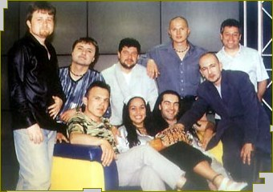

|
 Те са
известни, богати и талантливи. Те карат
мощни мотори и коли и всички се обръщат
след тях. Те са звезди от ефира, без да
са водили и секунда "По света и у нас".
Те са по-популярни и от най-известните
политици, спортисти, артисти. Обичат ги
еднакво и циганите от "Факултето",
и българите в Чикаго. Момичетата от
първите редове късат блузите си, за да
ги забележат. Други направо припадат
при появата им. Това е бандата на Слави. След всеки концерт не пропуска да обяви имената на великолепната деветка - Евгени Димитров-Маестрото (клавишни), Георги Милчев-Годжи (бас китара), Евгени Йотов (саксофон), Илия Илиев (кларинет), Йордан Йончев-Гъмзата (тропмет), Венелин Венков (ударни), Николай Арабаджиев- Шерифа (китара), Цветан Недялков (китара) и Лили Йончева (перкусии). Макар да остават в сянката на Дългия, всеки от тях е талант. Слави дълго побдирал групата, за да стигне до този състав. Те са съвършени, други няма, категоричен е бащата на бенда. "Ку-ку бенд" се появи на сцената на втората национална "Ку-ку академия" през 1993. От първия състав верни на каузата са останали само саксофониста Евгени Йотов и кларнетиста Илия Илиев. Плевенската музикална гимназия спокойно може да се прекръсти на "Ку-ку бенд". Чиновете й са търкали Слави, Годжи, Маестрото, Иво Казасов и Красимир Кирилов. Последните двама напускат бенда и в момента са в "Акага". Цяла България знае за любовта на Слави към виолата и как се е дипломирал семестриално в музикалната академия. После всички се разпръсват по различни краища на България, че и на света. Годжи е свирил по фериботи в Норвегия и Дания, участвал е в различни програми в Германия и Англия. Маестрото припечелвал като студент в пианобара на хотел "Родина". Евгени Йотов работил по кораби. Кларнетиста Илия Илиев изкарал два месеца в Израел с танцов ансамбъл. Там го заварила и войната в Персийския залив. Наложило се за 4 дни да се прибере в България. Слави пък свири в симфоничния оркестър на БНР. Оттам отива в студентското предаване "Ку-ку". Музикантската душа не изтрайва обаче и започва да прави песнички за предаването. Един по един се сеща за старите си приятели от Плевен и консерваторията и ги привиква за записи. "Бяхме състуденти със Слави. Той и Илийката работеха заедно в симфоничния оркестър на радиото. По приятелска линия се събирахме в един клуб и така от дума на дума се роди идеята за музикална формация", спомня си днес Евгени Йотов. "Както си записвахме песнички за "Ку-ку", дойде идеята, че е хубаво към предаването да се направи една формация. Първоначално беше малко оркестърче за фон на скечове. После дойдоха "Ку-ку-академията", турнетата, албумите", присеща се и Илия Илиев. Така се ражда истинският "Ку-ку бенд". В него влизат Ангел Заберски-син, Цветозар Каракдиев, Радосвет Кукудов, Красимир Желязков, Георги Пенчев, Красимир Кирилов, Евгени Йотов и Илия Илиев. Този състав издава през 1993 и първия култов албум на бандата "Ръгай чушки в боба". Той веднага става скандален тъй като текстовете му разбунтуват пуританския дух на все още задръстения българин. Хитове стават песни като "Ще ти скъсам гъза", "Мама на татко не дава", "Вчера в детската градина". Песните се изпълняват от Слави, Август Попов, Камен Воденичаров и Стефан Вълдобрев. Постепенно обаче през годините бандата се разпилява. Заберски-младши отива да работи в Германия. Слави кани за негов заместник Евгени Димитров-Маестрото. "Със Слави сме приятели от ученическите години в Плевен. Но през 1993г. се видяхме случайно в един джазклуб. Там той ме покани да работя в "Ку-ку", връща лентата Маестрото. Слави дал касетата "Ръгай чушки в боба" на Евгени и го попитал дали може бързо да ги разучи. "Чух ги, справих се и реално свирих на промоцията на албума. После тръгнах и на първото турне", разказва Евгени. Маестрото води Цветан Недялков и Красимир Желязков-Герасим. Цецо пък кани Венелин Венков и Николай Арабаджиев. През 1997г. Илия моли Гъмзата да го замества докато е на турне в чужбина. Слави обаче го харесва и така и Гъмзата става член на групата. На 17 юни 1995 се появява и Годжи. Пак по покана на Маестрото. С тази разлика, че е стар приятел на Слави. На 4 юли 1995г. явлението Годжи дебютира в националния ефир на концерта "България за Америка", който се излъчва пряко от Зала 1 на НДК. Годжи се включва активно и в подготовката на "Жълта книжка". Албумът пак предизвиква скандал - обвиняват ги в гавра с руския химн. През 1997г. към бандата се присъединява и барабанистът Калин Вельов. Всички са единодушни, че той е бил най-самобитния между тях. Въпреки реда и дисциплината само за него Слави прави компромиси - свири в много групи и идва когато си иска. Мокрият сън на всички ученички - Вельов решава обаче да учи в консерваторията в Холандия. И никой, дори и Слави не могъл да го спре. Изпратили го директно след концерт в Пловдив. Дълго се сбогували и накрая Калин станал внезапно, подпалил колата и казал: "Пичове, ако не тръгна сега, оставам с вас завинаги". Няколко месеца по-късно на стола на Калин сяда Лили Йончева. Тя е най-младият член на бандата и първата жена в него. Слави я нарича стопанката на бенда. Докато в "Ку-ку" и "Каналето" бендът се появяваше епизодично на сцената, истинския си ренесанс преживява в "Хъшове". Тогава идват всекидневните репетиции. Цяла България пее по площадите "Къде си вярна, ти, любов народна" и "Вятър ечи, Балкан стене". Идеята за възрожденските песни е на Любен Дилов-син. Един ден дошъл в офиса и казал: "Момчета, ситуацията назрява, давайте да правим революционни песни". Това било през есента на 1996г. Докато направим аранжиментите, то си стана време за революция, казва сега Маестрото. С "Хъшове" идва и "Часът на бенда". Първоначално рубриката се именува "Малка нощна музика", но някой от сценаристите предложил "Часа на бенда". Вече никой не си спомня кой е той, но всички приели с овации. В минутите за музика феновете на "Хъшове" опознаха таланта на всеки от групата. В "Шоуто на Слави" пък Годжи разкри актьорските си заложби. Никой не може да определи точно стилът на бенда. Затова и не е група за всеки музикант. Има обаче едно специфично звучене. Когато "Ку-ку бенд" забие първите акорди, всеки може да познае, че това е той. Всички трябва да са винаги нащрек - никой не знае кога Слави ще каже по време на предаването "Дай сега едно фонче - ранна утрин, птички и девствена мома на нивата". Момичетата от "Бонд" били втрещени от професионализма им. После признали, че такова удоволсвтие не са изпитвали на сцената. След концерта си в Албена оркестърът от "Ъндърграунд" и "Ку-ку бенд" направили уникално шоу в градината на ресторант "Милев". Сърбите изпаднали в дуенде и се пръснали да свирят до двора. Бендът също не се стърпял и грабнал инструментите. "Ноу
Ейнджълс" за първи път пяха на живо в
"Шоуто на Слави", откакто
съществува групата. Въпреки
предварителните уговорки за плейбек,
като засвирили първото парче,
момичетата страшно се изкефили и
направо запяли. "Антик" също не се
колебали да пеят на живо. След като чули
аранжиментите дори не се наложило
репетиция и направо започнали "Опа,
опа". За зрителя
обаче остават скрити 8-часовите
репетиции всеки ден. Никой не си е
помислил и да се олаква. Защото всички
работят с кеф. Всъщност те не приемат
това като работа, а като най-върховното
изживяване в живота си. Ние сме
приятели, скандали между нас няма,
защото има правила, казват музикантите.
|
|
|